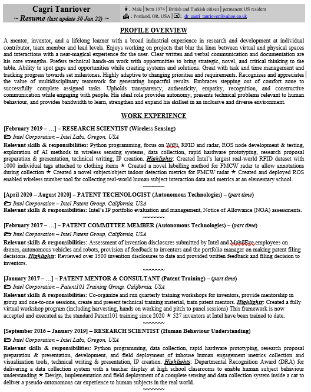

(last updated on 16 January 2023)
Located in: Portland, OR, USA
Email: dr_cagri_tanriover@yahoo.co.uk
You can also reach me via LinkedIn
A results-oriented professional with a unique industrial experience in research and product development environments. Proven track record in strategic and critical thinking as well as high adaptability to changing priorities and requirements to maintain momentum to create the expected impact. Comfortable with stepping out of comfort zone when needed. Seeking a work environment that upholds truth and transparency as part of core culture, sets its employees for success and provides growth opportunities.
Favorite Quote: "We cannot control which way the wind blows, but we can adjust the sails"
INTEL CORPORATION – USA and Turkey
[February 2019 – …] – STAFF RESEARCH SCIENTIST (Wireless Sensing - OR, USA)
Scope of work & Accomplishments: Research design & planning for WiFi, RFID and mmWave radar, ML model training & testing, data collection, rapid hardware prototyping.
• Created Intel’s largest real-world RFID dataset with 1000 individual tags and making it accessible across the company.
• Created a novel embedded labelling method for radar thereby saving ~$100K for Intel Labs
• Created radar gesture dataset (as a better fit than Google’s Soli dataset) to advance team Israel’s AI research.
[February 2017 – …] – PATENT TECHNOLOGIST (Autonomous Systems - OR, USA)
Scope of work & Accomplishments: Portfolio management, filing decisions on disclosures by Intel employees.
• Reviewed 1600+ pre-patent drafts to date and provided written feedback and filing decisions to inventors.
[January 2017 – …] – PATENT MENTOR (Patent 101 Workshops Group - OR, USA)
Scope of work & Accomplishments: Co-organize workshops, mentor inventors in group and one-to-one sessions.
• Created a fully virtual training workshop framework, which is used as the standard Patent101 training since 2020.
• Trained 500+ inventors at Intel using the new framework.
[September 2016 – January 2019] – SENIOR RESEARCH SCIENTIST (Human Behavior Understanding - OR, USA)
Scope of work & Accomplishments: Research design & planning, Python development of data analysis, sanitization and visualization tools, field deployment of hardware and software prototypes for data collection.
• Received a Departmental Recognition Award (DRA)
for deploying a data collection system in high school classrooms to evaluate learner behaviour.
• Design, implementation, and field deployment of a multi-sensor system for a commercial car and collection of ~500GB of real-world data on a pseudo-autonomous car experience of human subjects. (click for details)
[March 2015 – August 2016] – SENIOR SOFTWARE DEVELOPMENT ENGINEER (Wearables - Istanbul, TURKEY)
Scope of work & Accomplishments: Embedded hardware and software design and prototyping, customer & partner management, preparing and delivery of demos at industry events to increase Intel’s global exposure in wearables.
• Created the technology inside the world’s first interactive “haute couture” dress
• Created the smart version of the original Osteoid with Intel Edison to help patients with cerebral palsy syndrome. (click here for details)
[August 2014 – February 2015] – SENIOR SOFTWARE DEVELOPMENT ENGINEER - CONTRACTOR (Wearables - Istanbul, TURKEY)
Scope of work & Accomplishments: Embedded C programming, embedded platform prototyping, demo creation on Intel embedded SoCs.
• Upgraded and organized the Istanbul IoT Ignition Lab into a fully functional maker space for collaborating with local start-ups. (click for details)
• Designed and got Ignition Lab’s first Intel Edison breakout board manufactured. (click for details)
WHIZCOMM LIMITED – Istanbul, Turkey
[February 2011 – July 2014] – Co-founder & Solution Architect (Embedded Systems)
Scope of work & Accomplishments: Provision of technical consultancy to companies in Europe on wireless and embedded systems, customers engagement to capture pain points & provide bespoke solutions, supplier management.
• Designed and implemented the world's first portable automated personnel tracking RFID wearable system (WhizTrack) with wireless backend connectivity.
NOKTA ENGINEERING – Istanbul, Turkey
[January 2010 – January 2011] – SENIOR DSP ARCHITECT (Metal Detectors)
Scope of work & Accomplishments: Design, C implementation and field testing of the full digital signal processing pipeline as product differentiator, technical advice provision on new products, demonstration of products to customers.
• Successfully implemented company’s first fully functional DSP pipeline and integrated into model “Golden Gate”.
ETHERSTACK LIMITED – London and Reading, UK
[March 2009 – December 2009] – SENIOR SOFTWARE ENGINEER (Private Mobile Radio (PMR))
Scope of work & Accomplishments: Embedded programming in C++, focus on APCO P25 standard, implementation, testing and debugging of Man Machine Interface (MMI) and display features.
• Contributed to the FCC certification of one PMR model.
SOFTWARE RADIO TECHNOLOGY plc – Bath and Basingstoke, UK
[July 2006 – January 2009] – SOFTWARE TEAM LEADER (Private Mobile Radio (PMR) - Security)
Scope of work & Accomplishments: Mapping ETSI TETRA encryption standard into software specifications, software implementation in C, validation, demonstration of encryption features to management and customers.
• Implemented and integrated complete security modules into 600+ commercial radios.
[March 2006 – June 2006] – SENIOR SOFTWARE ENGINEER (Private Mobile Radio (PMR) - Security)
Scope of work & Accomplishments: C implementation of cryptographic algorithms and key management systems in compliance with ETSI TETRA security specifications.
• Successfully implemented and demonstrated the End-to-End encryption for voice on initial prototype radios.
HW COMMINICATIONS LIMITED – Lancaster, UK
[January 2002 – February 2006] – SENIOR RESEARCH & DEVELOPMENT ENGINEER (Wireless Systems)
Scope of work & Accomplishments: System design, C implementation, integration & testing, technical proposal preparation to win European and government grants, customer engagement and management.
• Secured company’s first ETSI Specialized Task Force (STF) contracts worth $100K.
• Drafted the “Multimedia Exchange Layer” in section 7.2 of ETSI’s Technical Report, ETSI TR 102 580 v1.1.1 (2007-10)
• Received company’s first recognition award from ETSI for my contributions to the TETRA standardization efforts.
• Designed and implemented real-time data acquisition from Welch Allyn medical monitor in flagship Telemedicine project.
[October 1998 – February 2002] – Doctoral Degree - PhD (Improved Turbo Coding), Lancaster University, UK
[October 1997 – May 1998] – Master’s Degree - MSc (Signal Processing Applications), Lancaster University, UK
[October 1993 – June 1997] – Bachelor’s Degree - BSc (Electronics and Telecommunications), ITU, Turkey
[August 1990 – May 1992] – International Baccalaureate, United World College, NM, USA
~~ For a list of my patents & publications to date please visit this link ~~
Download Cagri's resume as pdf by clicking on this icon 
{kind=link}
{kind=link}